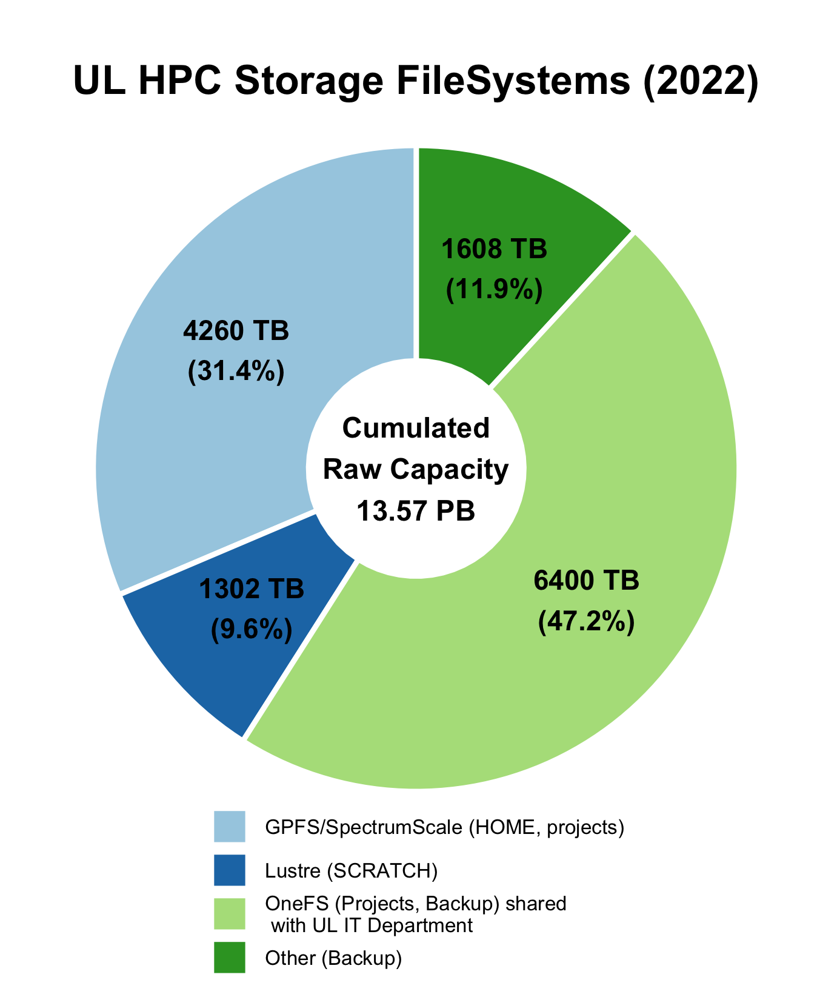

Storage overview¶
The UL HPC clusters provide access to several different File Systems (FS) which are configured for different purposes. There are the file systems local to the compute nodes, and cluster file systems accessible across the network. The available file systems can be seen in the following overview of the UL HPC cluster architecture.

What is a File System (FS)?
A File System (FS) is just the logical manner to store, organize & access data. There are different types of file systems available nowadays:
- Local FS you find on laptops and servers, such as
NTFS,HFS+,ext4,{x,z,btr}fs, and other; - Network FS, such as
NFS,CIFS/SMB,AFP, allowing to access a remote storage system as a NAS (Network Attached Storage); - Parallel and Distributed FS (clustered FS), such as
SpectrumScale/GPFSorLustre; those are file systems used in HPC and HTC (High Throughput Computing) facilities, such that- data is spread across multiple storage nodes for redundancy and performance, and
- global capacity and performance are scalable and increase as additional nodes are added to the storage infrastructure.
In the UL HPC cluster nodes, there are 3 types of file system in use.
- Clustered file systems attached to cluster nodes through the fast Infiniband network. These are,
- A networked file system attached to cluster nodes through the Ethernet network. This is
- an NFS export of an Isilon file system that stores directories.
- File systems local to the compute nodes. These are
etx4file systems mounted on/tmpof cluster nodes.
File systems not directly visible to users
The ULHPC team relies on other file systems within its internal backup infrastructure, such as xfs, a high-performant disk file-system deployed on storage/backup servers.
Storage Systems Overview¶
The following table summarize the mount location, backing up, and environment setup for each one of the network file systems in the cluster.
Cluster file systems
| Directory | Environment variable | File system | Backup | Interconnect |
|---|---|---|---|---|
/home/users/<username> |
${HOME} |
GPFS/Spectrumscale[1] | no | Infiniband |
/work/projects/<project name> |
${PROJECTHOME}/<project name> |
GPFS/Spectrumscale[1] | yes (partial, only backup subdirectory) |
Infiniband |
/scratch/users/<username> |
${SCRATCH} |
Lustre | no | Infiniband |
/mnt/isilon/projects/<project name> |
- | OneFS | yes (and live sync[2]) | Ehternet |
-
The file system mounted on the home directories (
/home/users) and project directories (/work/projects) are both exported by the GPFS/Spectrumscale file system.- Storage for both directories is redundant, so they are safe against hardware failure.
- Only
/home/usersis mirrored in a SSD cache, so/home/usersis a significantly faster for random and small file I/O.
-
Live sync replicates data across multiple OneFS instances for high availability.
A local file system is also accessible through /tmp. The following table summarizes the type and capacity of the local storage drives.
Local file systems
In cluster nodes there is a local file system mounted in /tmp. The file systems in the compute nodes are the following:
| Cluster | Partition | Storage drive interface | Mount directory | File system | Size |
|---|---|---|---|---|---|
| Aion | batch |
SATA | /tmp |
ext4 | 367 GB |
| Iris | batch |
SATA | /tmp |
ext4 | 73 GB |
| Iris | gpu |
NVME | /tmp |
ext4 | 1.5 TB |
| Iris | bigmem |
NVME | /tmp |
ext4 | 1.4 TB |
- Use the local file system mounted in
/tmpfor small file I/O. Cluster file systems can be slow when handling many small file I/O operations due to botlenecks in the metadata server bandwidth and latency. - In compute nodes, the contents of
/tmpare whipped out after the completion of a job.
Intended usage of file systems¶
Each file system in the cluster performs best in a specific set of functions.
- Use the GPFS file system directory mounted in your
${HOME}for files that need to be accessed fast. - Use the GPFS file system directories mounted in
${PROJECTHOME}to store large files required for running your jobs. - Use the Luster file system directory mounted in
${SCRATCH}to store files that need to be accessed fast. Scratch is meant for temporary storage only, remove your files from scratch as soon as they are not needed for any running jobs. - Use project directories in the NFS and SMB exports of Isilon to archive data that need to be stored safely. The OneFS file system of Isilon is backed up regularly.
- Use the local file systems mounted in
/tmpfor small file I/O. Clustered file systems do not handle small file I/O well.
Many file system technologies (e.g. ZFS) can hide a lot of the complexity of using a file system. HPC clusters tend to provide low level access to file system functionality so that users can select the technology that provides the best performance for their workload.
Clustered file systems¶

Current statistics of the available file systems are depicted on the side figure. The ULHPC facility relies on 2 types of Distributed/Parallel File Systems to deliver high-performant Data storage at a BigData scale:
- IBM Spectrum Scale, formerly known as the General Parallel File System (GPFS), a global high-performance clustered file system hosting your
${HOME}and projects data mounted in${PROJECTHOME}. - Lustre, an open-source, parallel file system dedicated to large, parallel scratch storage mounted in
${SCRATCH}
Home directory¶
Home directories provide access to configuration files (such as dotfiles) and work files (such as binaries and input and output files) across all cluster nodes. Use home to store working data that are accessed by multiple processes in compute nodes and configuration files.
- Home directories are mirrored and cached in Tier 0 storage, so small file and random I/O is relatively fast but not as fast as local storage.
- The GPFS file system storing the home directories is redundant, so it is safe to data and access loss due to hardware failure.
The environment variable ${HOME} points to a user's home directory. The absolute path may change, but the value of ${HOME} will always be correct.
Project directories¶
Project directories share files within a group of researchers, and are accessible under the path /work/projects/<project name> in every cluster node. Use project directories to share files and to store large data files that are actively used in computations.
- Project directories are not mirrored in Tier 0 storage, so small file I/O performance is lower that the home directory.
- Since project directories are not mirrored in Tier 0 storage, the available storage space is much larger.
- The GPFS file system storing the project directories is redundant, so it is safe to data and access loss due to hardware failure.
The environment variable ${PROJECTHOME} points to the parent directory of all projects (/work/projects). The absolute path to the project home directory may change, but ${PROJECTHOME} is guaranteed to point to the parent directory of all projects directories.
Scratch directory¶
The scratch area is a Lustre-based file system that provides high performance temporary storage of large files and is accessible across all cluster nodes. Use scratch to store working files and temporary large data files.
- The scratch file system is not fully redundant, so do not use scratch to store files that cannot be recreated. For instance store only simulation output that can be recalculated.
Small file and random I/O
The scratch is best used to write large files in a continuous manner. Even though the Lustre file system can handle small file and random I/O better that our GPFS system, it still slows down considerably as the number of I/O operations increases. Typical example of operations with a lot random and small file I/O operations in the parallel compilation of large projects.
Prefer the locally mounted file system in /tmp for small file and random I/O.
Origin of the term scratch
The term scratch originates from scratch data tapes. People uses scratch tapes to write and read data that did not fit into the main memory, and since it was a tape, it could only perform continuous I/O. The term scratch is a bit abused in modern times as most storage systems nowadays support random access. In the case of the lustre system in UL HPC, the terms scratch serves as a reminder that the file system is best used for contiguous I/O, even though it supports random access quite well.
The environment variable ${SCRATCH} (which expands to /scratch/users/$(whoami)) points to a users scratch directory. The absolute path may change, but the value of ${SCRATCH} will always be correct.
Networked file systems¶
The HPC systems also provide direct access through mount points on cluster nodes to the central data storage of the university. The central data storage uses a Dell/EMC Isilon system for the safe archiving of data. Clustered file systems are not meant for the long term storage of data. If you want your data backed up, move your data to the central data storage.
Cold project data and archives¶
In the UL HPC platform the NFS exported by Isilon is used to host project data when they are not actively used in computations, and for archival purposes. Projects are mounted under /mnt/isilon/projects.
-
The file system in Isilon is redundant, regularly snapshot, and backed up, including off site backups. Data is replicated across multiple OneFS instances for high availability with the live sync feature of OneFS. Isilon is thus resilient to hardware failure, protected against catastrophic data loss, and also highly available.
-
The NFS share exported from Isilon to the UL HPC platform is not using the Infiniband high performance network and the OneFS file system has lower I/O performance that GPFS and lustre file systems. However, the central data storage has significantly higher capacity.
Long term data storage
Please move all your data to OneFS directories of the central data storage as soon as your computations finish.
The central data storage is the intended place for storing data. Clustered file systems using the inifiniband network are meant as working storage only. For this reason, backups in cluster file systems are very limited.
Users have to ask for a project directories in the Isilon mount point (/mnt/isilon/projects) separately from the GPFS project directories. However, all users have a personal directory in the university central data storage which they can access through the ATLAS SMB system. Users may also ask for project directories that are accessible through ATLAS, however these project cannot be mounted on the Isilon NFS share (/mnt/isilon/projects).
Quota¶
The UL HPC systems provide the df-ulhpc command on the cluster login nodes to display the current space and inode (with the option flag -i) quota usage. For more details see the documentation section about quotas.
Users and project groups are assigned a fixed amount of storage. There are quota limits in terms of storage space and number of files (inodes). When a quota limit is reached writes to the relevant directories will fail. The storage limits are described below.
Quota limits in cluster file systems
| Directory | Default space quota | Default inode quota |
|---|---|---|
${HOME} |
500 GB | 1 M |
${SCRATCH} |
10 TB | 1 M |
${PROJECTHOME}/<project name> |
1 TB[1] | 1 M[1] |
/mnt/isilon/projects/<project name> |
1.14 PB globally[2] | - |
- This is the default and free of charge allocation for projects; requests for more space may incur charges.
- On Isilon all projects share one global quota limit and the HPC Platform team sets up individual project quotas. Unfortunately it is not currently possible for users to see the quota status on Isilon.
Backups¶
Backups are vital to safeguard important data. Always maintain a well defined backup policy. You can build your backup policy on top of the backup services offered in the UL HPC systems. A high level overview of the backup policies in place for the HPC systems is presented here. If you require specific details, please contact the HPC team directly.
Limitations of backup policies in UL
The UL HPC and SIU do not offer cold backups (offline backups). All our backups are maintained in live systems.
All UL HPC users should back up important files on a regular basis. Ultimately, it is your responsibility to protect yourself from data loss.
More details and information on how to recover your backed up data can be found in the section of the documentation about backups.
UL HPC clustered file systems¶
The cluster file systems are not meant to be used for data storage, so there are minimal back ups created for files in the cluster file systems. The backups are only accessible by UL HPC staff for disaster recovery purposes only. The following table summarizes the backups kept for each file system mount point.
| Directory | Path | Backup location | Frequency | Retention |
|---|---|---|---|---|
| home directories | ${HOME} |
not backed up | - | |
| scratch | ${SCRATCH} |
not backed up | - | |
| projects | ${PROJECTHOME} |
CDC, Belval | Weekly | One backup per week of the backup directory ONLY (${PROJECTHOME}/<project name>/backup/). |
Project backups
Use the backup subdirectory in your project directories to store important configuration files for you projects that are specific to the UL HPC clusters.
UL HPC backup policy
Data are copied live from the GPFS file system to a backup server (due to limitation regarding snapshots in GPFS). The backup data are copied to a Disaster Recovery Site (DSR) in a location outside the server room where the primary backup server is located.
Isilon networked file system¶
Projects stored on the Isilon system are snapshotted regularly. This includes the NFS export of Isilon in HL HPC systems, personal and project directories in Atlas, the SMB export of Isilon, but not the personal directories of the students exported through the Poseidon SMB export of Isilon. The following snapshot schedule and retention strategy are used:
| Backed up snapshot | Retention |
|---|---|
| Daily | 14 days |
| Weekly | 5 months |
| Monthly | 12 months |
SIU back up policy
Snapshots do not protect on themselves against a system failure, they only permit recovering files in case of accidental deletion. To ensure the safe storage, snapshots data is copied to a Disaster Recovery Site (DSR) in a location outside the server room where the primary data storage (Isilon) is located.
Useful resources¶
- ULHPC backup policies
- Quotas
- ULHPC GPFS/SpectrumScale and Lustre filesystems
- UL Isilon/OneFS filesystems